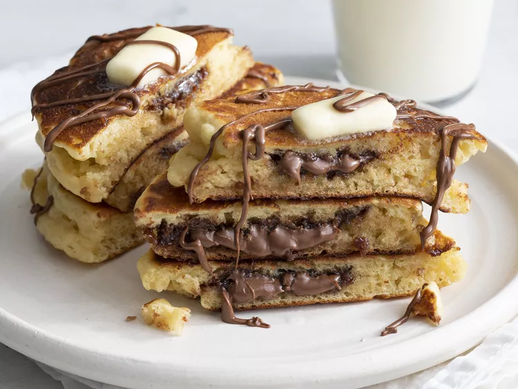

nutella pancakes

Description
Fluffy, sweet pancakes stuffed with gooey Nutella.
These feel indulgent and so addictive.
A real treat for both kids and adults.
ingridients
- 2 cups all-purpose flour
- 1 tablespoon white sugar
- 1 ½ teaspoons baking powder
- 1 teaspoon baking soda
- 1 teaspoon kosher salt
- 1 ½ cups whole buttermilk
- 2 large eggs
- 3 tablespoons unsalted butter, melted
- 10 teaspoons chocolate-hazelnut spread (such as Nutella®)
- 2 tablespoons unsalted butter, or as needed
steps
-
Whisk together flour, sugar, baking powder,
baking soda, and salt in a large bowl.
-
Whisk together buttermilk and eggs and add to flour mixture.
Fold and stir until just combined.
Add 3 tablespoons melted butter and stir until incorporated.
-
Working in batches, spoon about 3 tablespoons batter
per pancake and spread into circles in the pan. Cook
until edges start to set and some bubbles start to
form around edges and in center of batter, 1 to 2 minutes.
-
Gently dollop 1 teaspoon Nutella in center of batter
(it's ok if it isn't a perfect round).
-
Dollop and lightly spread about 1 1/2 tablespoons more
batter over Nutella to cover completely. Continue cooking
until bottom and sides of pancake are golden brown and some
bubbles are starting to form where Nutella is covered,
about 1 minute.
-
Carefully flip pancakes and continue cooking until second
side is golden brown and sides appear matte and cooked through,
2 to 3 more minutes. Transfer to plates and serve immediately.